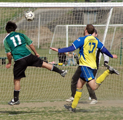
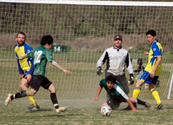
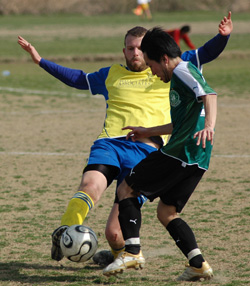

|
Misato Sunday 23rd March,
Hibs made the trek out to Misato to take on the Geckoes expecting the usual hurricane winds and lunar surface, but the conditions weren't too bad - reasonably flat, nice weather and mild winds - so no excuses on that front. Both teams were up for it and tried to impose their style on the game early.
Hibs got some passing going and had a nice build up that led to an early shot by Kuni off the post, but then the hard-charging Gecks began to pick off our passes and force mistakes in our backfield. They only managed one shot on target, which Hitoshi handled calmly, but won numerous free kicks and corners. Eventually a corner came through a cluster of bodies and Jay mishandled it in the box, a Gecko swept in before we could react and poked it home, 1-0.
They kept the pressure on and nearly caught us again on the counter after a Hibs corner, their man got through alone but the Hibs defense recovered and pressured him into a weak shot wide. Andre then began to take control up front, he stole several balls from their defenders and finally got a perfect ball through to an unmarked Yama, who misfired and hit the crossbar, still 1-0 into the half.

In the second half Yasu moved up to midfield and intercepted their opening play, he got the ball to Andre who fired off a hard shot, their keeper parried it but Yama swept in to finish, 1-1 about two minutes in. We picked off another pass a few minutes later, this time it was Yama who had his shot saved but Tomo got to the rebound, 2-1 Hibs.
Things were looking good for the boys in green but then the Gecks pudgy forward got in Jay's head, he pushed the man down in the box, the ref rightfully pointed to the spot and it looked like the rally was for naught. The PK was taken well lower left corner, but it was Hitoshified, great save, and Hitoshi got back on his feet to kick the rebound away from two incoming Geckoes. He took a nasty hit to the face on the play but shook it off to finish the game strongly.

From there it was all Hibs - the game opened up and our offense went to work. Andre, who put in tons of hard running and had a great day, took a ball at midfield and played Yama in alone, Yama calmly chipped the keeper for his second. Ed made a good move in from the left but his shot was blocked, eventually Tomo got to the rebound in the ensuing flurry and scored his second. Then Andre had a good shot which was deflected to Yama, who pounded it home for his hat trick and the 5-1 final.
In the tables it will show that Hibs blew out the Geckoes twice this year, but that doesn't reflect how hard fought the games were. We deserved the win Saturday, but the Geckoes as usual got stuck right in and played a tough physical game.
Report by Jay Alabaster
|